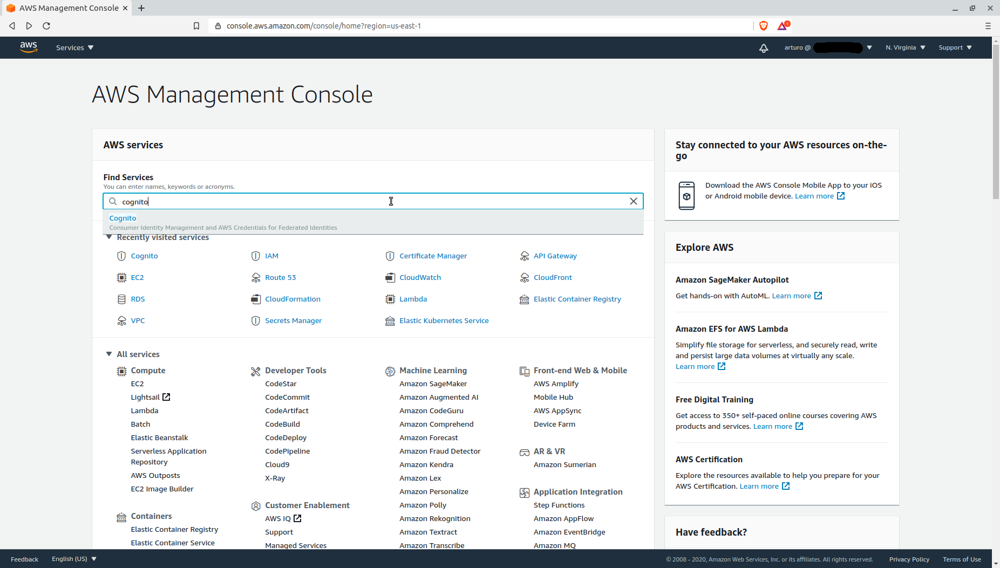
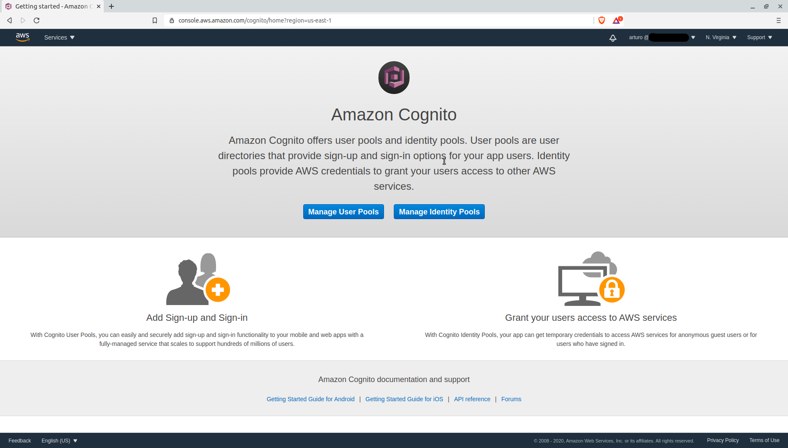
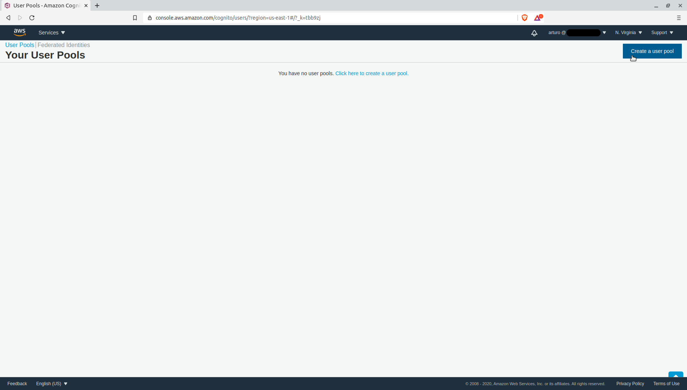
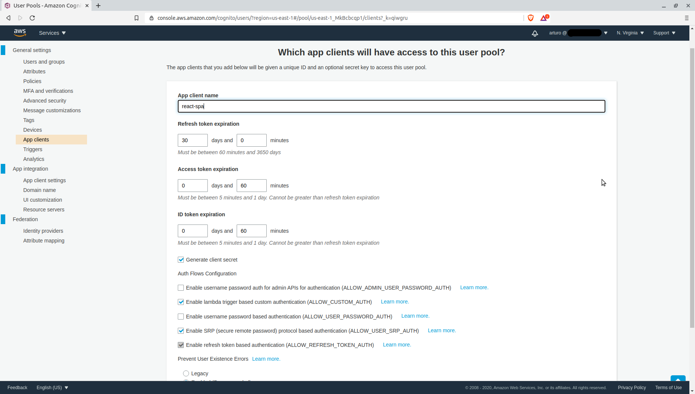
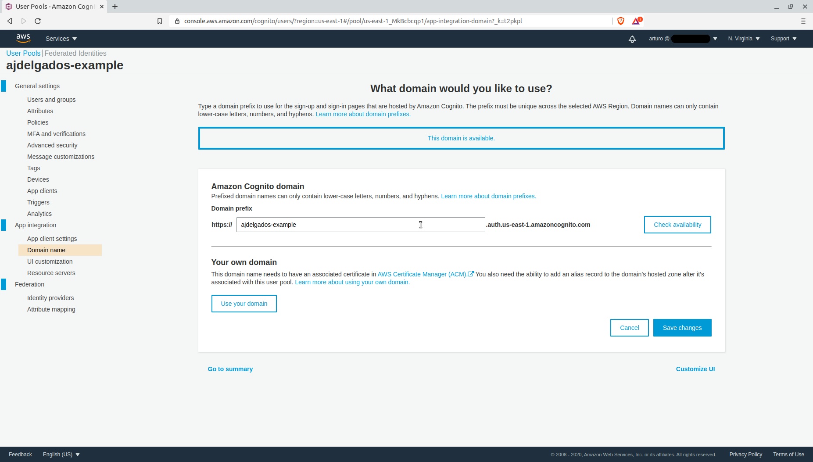
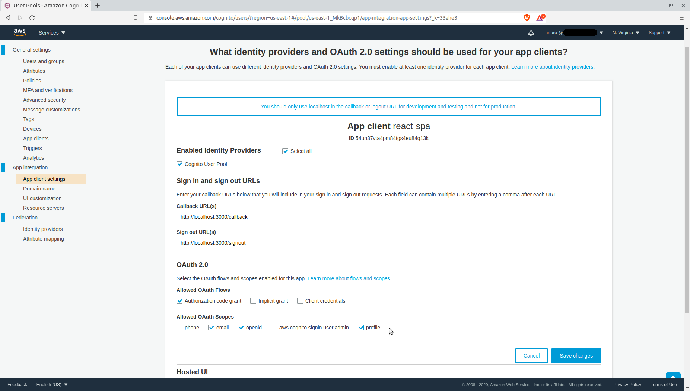

React con AWS Cognito es una publicación para mostrar la autenticación de usuario con AWS Cognito con un posible frontend hecho con React JS usando directamente el API de Cognito para generar los tokens necesarios y validar el usuario. Se utilizara create-react-app para crear una pequeña aplicación SPA con React y diferentes componentes de React Hooks.
¿Qué es AWS Cognito?
AWS Cognito es un servicio que te permite manejar la autenticación de usuario y tiene la especial característica poder hacerla con diferentes proveedores de identidad (Identity providers) y diferentes protocolos como Oauth 2.0, SAML 2.0 y OpenID Connect. También tiene diferentes SDK para ser multiplataforma, entre los más importantes se encuentra el SDK para iOS y Android. En web, tienen Amplify, pero no me gusta esa solución, recarga mucho el frontend de librerías y se debería usar para una aplicación que utilice muchos servicios de AWS, no solo Cognito.
¿Por qué React JS?
React JS es una librería de JS para construir interfaces de usuario, soportada por una gran comunidad y Facebook. En esta publicación la usaremos para generar una pequeña aplicación SPA y hacer llamados al API de AWS Cognito, pero una arquitectura real sería con un backend para hacer la verificación del token y sin exponer en el lado del cliente el App Client Secret del User Pool.
Prerrequisitos y consideraciones
El sistema operativo donde se desarrolló la explicación es Ubuntu 18.04. Estaremos usando algunos comandos de terminal, todos se ejecutarán con usuario simple (o usuario sin privilegios). Fueron usadas las versiones de node 12.16 y npm 6.13, las cuales se da por supuesto que han sido instaladas previamente.
Recomiendo descargar e instalar nvm para unix, macOS o Windows Subsystem for Linux, permitirá tener varias versiones de node y cambiarte entre ellas muy rápido.
Iniciando en AWS Cognito
En React con AWS Cognito vamos a AWS Console y buscamos Cognito

Mostrará la pantalla de bienvenida del servicio, para esta publicación en necesario seleccionar User Pools

En la pantalla Users Pools, seleccionamos Create a user pool

Crear un User Pool
Las siguientes pantallas serán para configurar el User Pool, para desarrollar este artículo, vamos a usar la mayoría de las opciones por defecto y solo cambiaremos las siguientes, nombrar el Pool “ajdelgados-example”, seleccionar “Email address or phone number” para la pregunta cómo quieres que los usuarios inicien sesión, seleccionar “None – users will have to contact an administrator to reset their passwords” para indicar cómo el usuario podrá recuperar su cuenta y seleccionar “No verification” para indicar que atributo se debe verificar. La mayoría de los cambios en la configuración por defecto es para no configurar SNS o SES.
Lo siguiente es crear una “App clients” llamada react-spa con todas las opciones por defecto

Se debe crear el dominio para el user pool, puedes usar un dominio asociado a la cuenta de AWS que tenga un certificado asociado en ACM (AWS Certificate Manager) o reservar un dominio de prefijo en AWS Cognito, para efectos de la publicación se usará un dominio de prefijo llamado “ajdelgados-example” (primero se debe verificar si está disponible y luego guardar)

Asociaremos el App client con el User Pool en App client settings y se debe seleccionar Cognito User Pool (en este apartado debería aparecer otros identity providers si se tiene otros configurados), colocar http://localhost:3000/ en Callback URL(s), http://localhost:3000/signout en Sign out URL(s), selecciona Authorization code grant, email, openid y profile

Los pasos anteriores funcionan para tener el User Pool configurado para ser llamado desde React. Es necesario crear un usuario en el user Pool para hacer las pruebas, es sencillo solo se debe ir a Users and groups, seleccionar Create user y llenar el formulario que aparecerá en la pantalla.
Iniciando el proyecto React
En React con AWS Cognito se debe iniciar una aplicación SPA con React, utilizaremos el siguiente comando
$ npm init react-app my-app
En el proyecto debemos instalar unas dependencias. react-router-dom es un componente para manejar la navegación en la SPA y react-spinners es una colección de spinners simples de implementar en React.
$ npm install react-router-dom react-spinners
Definir las variables de entorno es importante, crear un archivo .env en la raíz del proyecto y definir las diferentes variables es lo siguiente, pero antes es necesario conocer el client id y client secret del App client en base64
$ echo -n 'CLIENT_ID:CLIENT_SECRET' | base64
El resultado anterior se copia y se coloca en el .env, se le asigna a REACT_APP_COGNITO_SECRET
REACT_APP_COGNITO_DOMAIN=DOMAIN REACT_APP_COGNITO_AWS_REGION=REGION REACT_APP_COGNITO_CLIENT_ID= REACT_APP_COGNITO_REDIRECT_URI=http://localhost:3000/ REACT_APP_COGNITO_LOGOUT_URI=http://localhost:3000/signout REACT_APP_COGNITO_SECRET=
El componente App en src/App.js será modificado, primero es colocar un link para redirigir al portal de Cognito
import logo from './logo.svg';
import './App.css';
function App() {
return (
<div className="App">
<header className="App-header">
<img decoding="async" src={logo} className="App-logo" alt="logo" />
<a
className="App-link"
href={`https://${process.env.REACT_APP_COGNITO_DOMAIN}.auth.${process.env.REACT_APP_COGNITO_AWS_REGION}.amazoncognito.com/login?response_type=code&client_id=${process.env.REACT_APP_COGNITO_CLIENT_ID}&redirect_uri=${process.env.REACT_APP_COGNITO_REDIRECT_URI}&state=STATE&scope=openid+profile`}
rel="noopener noreferrer"
>
Sing In
</a>
</header>
</div>
);
}
export default App;</pre></code>
<p>En el código anterior se colocó una URL que apunta al portar de Cognito con las variables de entorno en el link. Al ejecutar el proyecto con npm start, se puede ver el link y se redirige al portal con un click. Cuando se hace la autenticación exitosa, se puede ver el callback y contiene un parámetro en la URL llamado code.</p>
<figure><img src="../assets/react-con-aws-cognito-para-autenticacion-de-usuario/7-cognito-code.png" alt="" loading="lazy"></figure>
<p>El código entregado por Cognito debería ser enviado a un backend y ser validado allá, además hacer la parte de authorization del usuario. En esta publicación se realizará la validación del código en el mismo cliente para solo demostración.</p>
<p>Se utilizará la combinación de los hooks context y reducer en remplazo de Redux. Lo primero es crear un archivo llamado contexts/sessionContext.js en el proyecto.</p>
<pre><code>import React, { createContext, useReducer } from "react";
const SessionContext = createContext();
const reducer = (state, action) => {
switch (action.type) {
case "LOAD_USER_INFORMATION": {
return {
...state,
loading: true,
message: null,
};
}
case "LOADED_USER_INFORMATION": {
return {
loading: false,
authenticated: true,
message: null,
payload: action.payload
};
}
case "FAIL_USER_INFORMATION": {
return {
loading: false,
authenticated: false,
message: "Authentication fail",
payload: {}
};
}
default:
return state;
}
};
const initialState = {
loading: false,
authenticated: false,
message: null,
payload: {}
};
const SessionContextProvider = props => {
const [state, dispatch] = useReducer(reducer, initialState);
return (
<sessioncontext.provider value="{{" state,="" dispatch="" }}="">
{props.children}
</sessioncontext.provider>
);
};
export {SessionContext, SessionContextProvider}En el archivo anterior tenemos la inicialización de context, los diferentes tipos de reducer que se podrán hacer y el estado inicial de contexto. Se necesitan 4 atributos en es estado inicial.
- loading de tipo boolean para verificar cuando se este haciendo el llamado al API de Cognito.
- authenticated de tipo boolean para guardar si el usuario está autenticado.
- message de tipo string, pero se inicializa con null, donde se guardará un mensaje en caso de error.
- payload es un objeto y se guardará la información del usuario.
En el reducer tenemos 3 posibles acciones para modificar el estado
- LOAD_USER_INFORMATION para indicar que se está llamando al API y activar el spinner.
- LOADED_USER_INFORMATION para cargar la información del usuario extraida del API de Cognito y ocultar el spinner.
- FAIL_USER_INFORMATION para mostrar un mensaje de error si la llamada al API tiene algún problema y ocular el spinner.
Se procede a la modificación de index.js para agregar los componentes BrowserRouter y SessionContextProvider
import React from 'react';
import ReactDOM from 'react-dom';
import { BrowserRouter } from 'react-router-dom'
import './index.css';
import App from './App';
import reportWebVitals from './reportWebVitals';
import { SessionContextProvider } from './contexts/sessionContext'
ReactDOM.render(
,
document.getElementById('root')
);
// If you want to start measuring performance in your app, pass a function
// to log results (for example: reportWebVitals(console.log))
// or send to an analytics endpoint. Learn more: https://bit.ly/CRA-vitals
reportWebVitals();En en componente App.js se agrega los hooks useContext, useLocation y useHistory. También se deben agregar los componentes SessionContext y BounceLoader.
import React, { useContext } from 'react';
import logo from './logo.svg';
import './App.css';
import { useLocation, useHistory } from 'react-router-dom'
import { SessionContext } from './contexts/sessionContext'
import BounceLoader from "react-spinners/BounceLoader";
function App() {
const history = useHistory();
const { state, dispatch } = useContext(SessionContext);
const query = new URLSearchParams(useLocation().search);
if(query.get("code")) {
const code = query.get("code");
history.push("/");
dispatch({ type: 'LOAD_USER_INFORMATION' })
setTimeout( () => {
fetch(`https://${process.env.REACT_APP_COGNITO_DOMAIN}.auth.${process.env.REACT_APP_COGNITO_AWS_REGION}.amazoncognito.com/oauth2/token`, {
method: 'POST',
headers: {
'Content-Type': 'application/x-www-form-urlencoded',
'Authorization': `Basic ${process.env.REACT_APP_COGNITO_SECRET}`
},
body: `grant_type=authorization_code&redirect_uri=${process.env.REACT_APP_COGNITO_REDIRECT_URI}&client_id=${process.env.REACT_APP_COGNITO_CLIENT_ID}&code=${code}`
})
.then(response => response.json())
.then(data => {
if(!data.access_token) {
dispatch({ type: 'FAIL_USER_INFORMATION' })
} else {
fetch(`https://${process.env.REACT_APP_COGNITO_DOMAIN}.auth.${process.env.REACT_APP_COGNITO_AWS_REGION}.amazoncognito.com/oauth2/userInfo`, {
headers: {
'Authorization': `Bearer ${data.access_token}`
}})
.then( responseUserInfo => responseUserInfo.json())
.then(dataUserInfo => {
dispatch({
type: 'LOADED_USER_INFORMATION',
payload: dataUserInfo
})
})
.catch(() => {
dispatch({ type: 'FAIL_USER_INFORMATION' })
})
}
})
.catch(() => {
dispatch({ type: 'FAIL_USER_INFORMATION' })
})
}, 1000)
}
return (
);
}
export default App;Al recibir un parametro por la URL de tipo code, se hace dispara la acción LOAD_USER_INFORMATION para cargar el spinner, indicando al usuario que se está cargando la información.
Se hace la llamada a endpoint de Cognito oauth2/token y si el código es válido, responderá con un token. Ese token de tipo JWT se usa para traer la información del usuario con el endpoint de Cognito oauth2/userInfo. Al obtener la información del usuario, se despacha la acción LOADED_USER_INFORMATION para quitar el spinner e indicar que el usuario está autenticado con su información en el payload.
Si el code tiene algún problema, se despachará la acción FAIL_USER_INFORMATION para retirar de la vista el spinner y colocar un mensaje de error.
Conclusión
AWS Cognito nos proporciona un API para usar el servicio sin la necesidad de Amplify, simplificando el uso de librerías que podrían sobre cargar un proyecto sencillo. También el conocimiento del API proporciona la posibilidad de usar en otros ambientes (lenguajes de programación, frameworks, servicios) y hacer un SSO completo en la organización.
Código en mi repositorio de GitHub